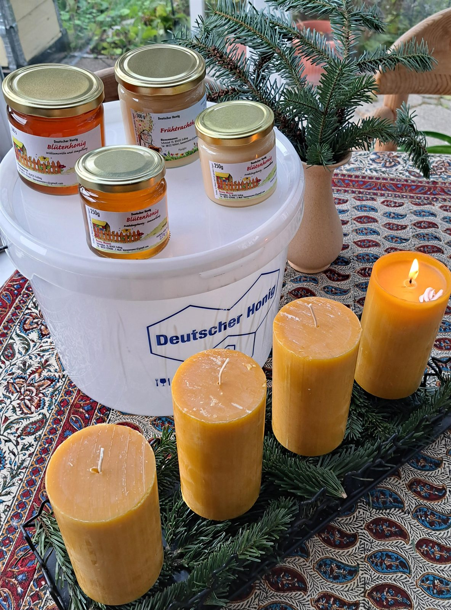
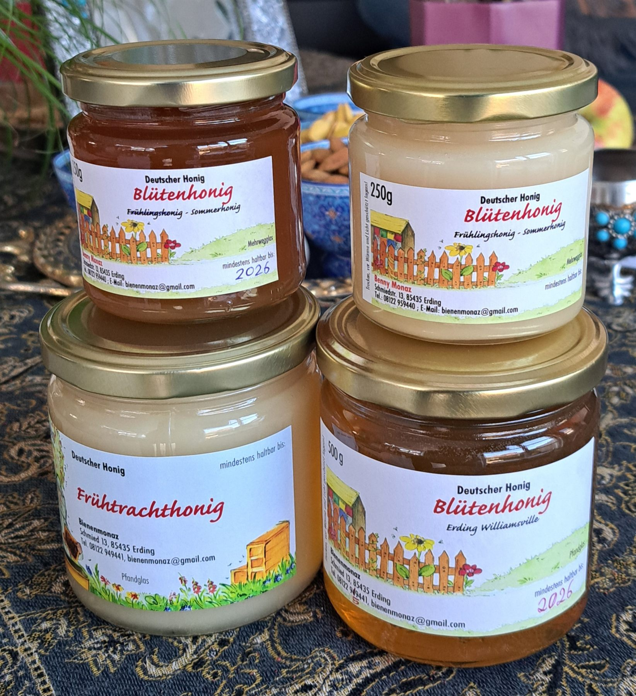

Ein starkes Sommervolk funktioniert wie ein eingespielter Organismus.
Regional. Artgerecht. Handgeschleudert.
Artgerechte Imkerei und ehrlicher Honig aus Erding.
Bienenmonaz zeigt die Imkerei so, wie sie sein soll: ruhig, hochwertig und klar in der Struktur, mit echtem Blick auf Bienenvolk, Haltung und Honig aus eigener Imkerei.

Im Bienenstock wird die Temperatur erstaunlich präzise geregelt.
So entsteht auch das typische Summen, das man am Stand sofort hört.
Wussten Sie schon?
Schöne, starke Fakten rund um Bienen und Honig.
-
Ein Teelöffel Honig
Mehr produziert eine einzelne Biene in ihrem Leben ungefähr nicht.
-
Bis zu 100.000 Kilometer
So weit fliegen Bienen für 1 kg Honig zusammengerechnet.
-
Fünf Augen
Zwei große Facettenaugen und drei Punktaugen helfen bei Orientierung und Lichtwahrnehmung.
-
Wabe, Vorrat, Kinderstube
Eine Wabe ist zugleich Architektur, Lagerraum und geschützter Ort für die Brut.
Unsere Haltung
Versprechen für artgerechte Bienenhaltung.
-
Kein Flügelschnitt
Königinnen behalten ihre Flügel, natürliche Abläufe bleiben erhalten.
-
Keine künstliche Besamung
Die Paarung soll natürlich erfolgen, ohne unnötige Eingriffe.
-
Kein Plastik in Beuten oder Waben
Material und Haltung bleiben bewusst nah an dem, was dem Volk guttut.
-
Holzkästen im Naturbau
Ein ehrliches Umfeld, das zur Arbeitsweise der Bienen passt.
Unser Honig
Frühlings- und Sommerhonig aus eigener Imkerei.
Erhältlich in 250 g- und 500 g-Gläsern, mit unterschiedlichen Farben, Konsistenzen und Aromen je nach Blüte und Saison.
- Frühlingshonig: mild, blumig, hellgolden
- Sommerhonig: kräftig, aromatisch, bernsteinfarben
- 100 % deutscher Honig, handgeschleudert in Erding
- Kurze Wege, echte Herkunft und sichtbare Handarbeit

Weiterklicken